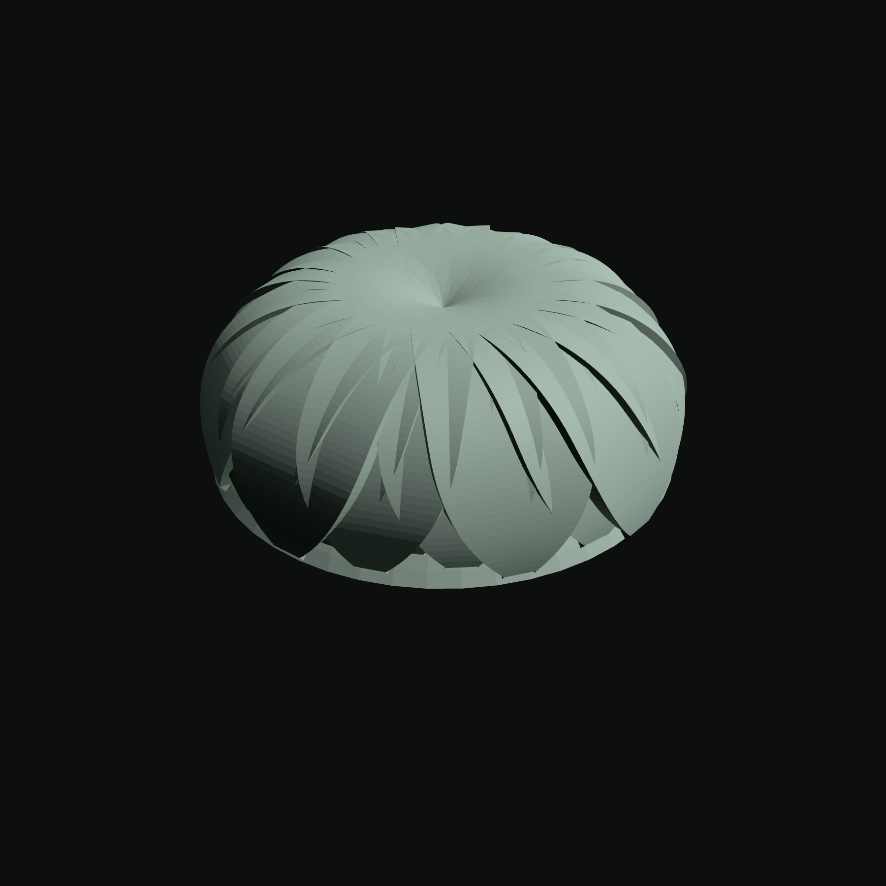
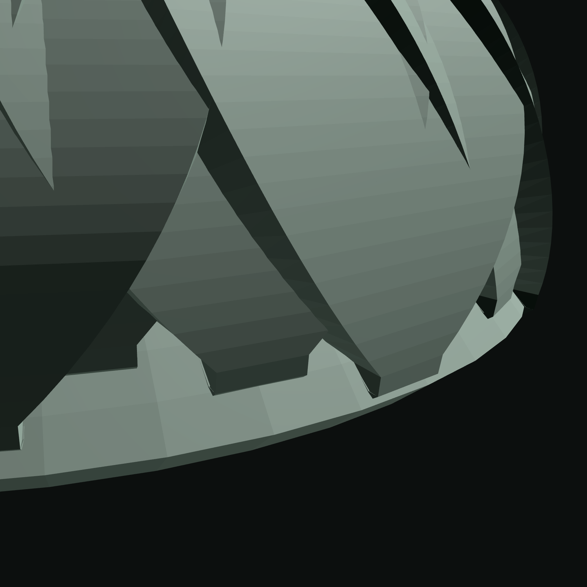
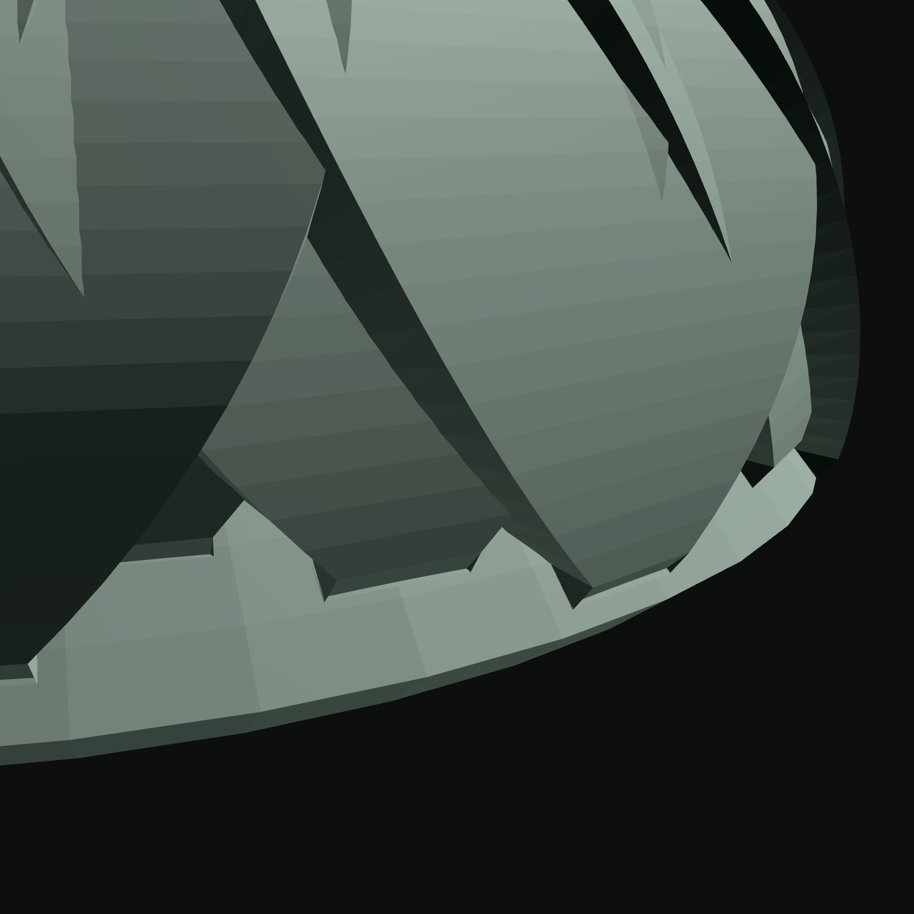
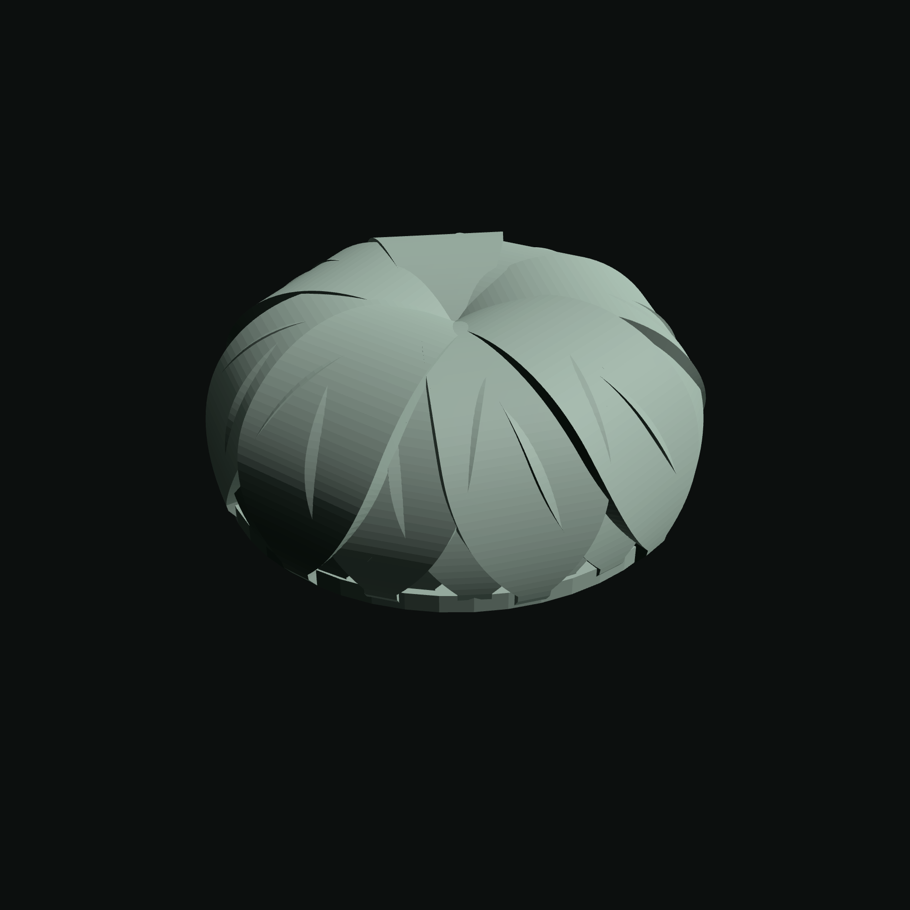
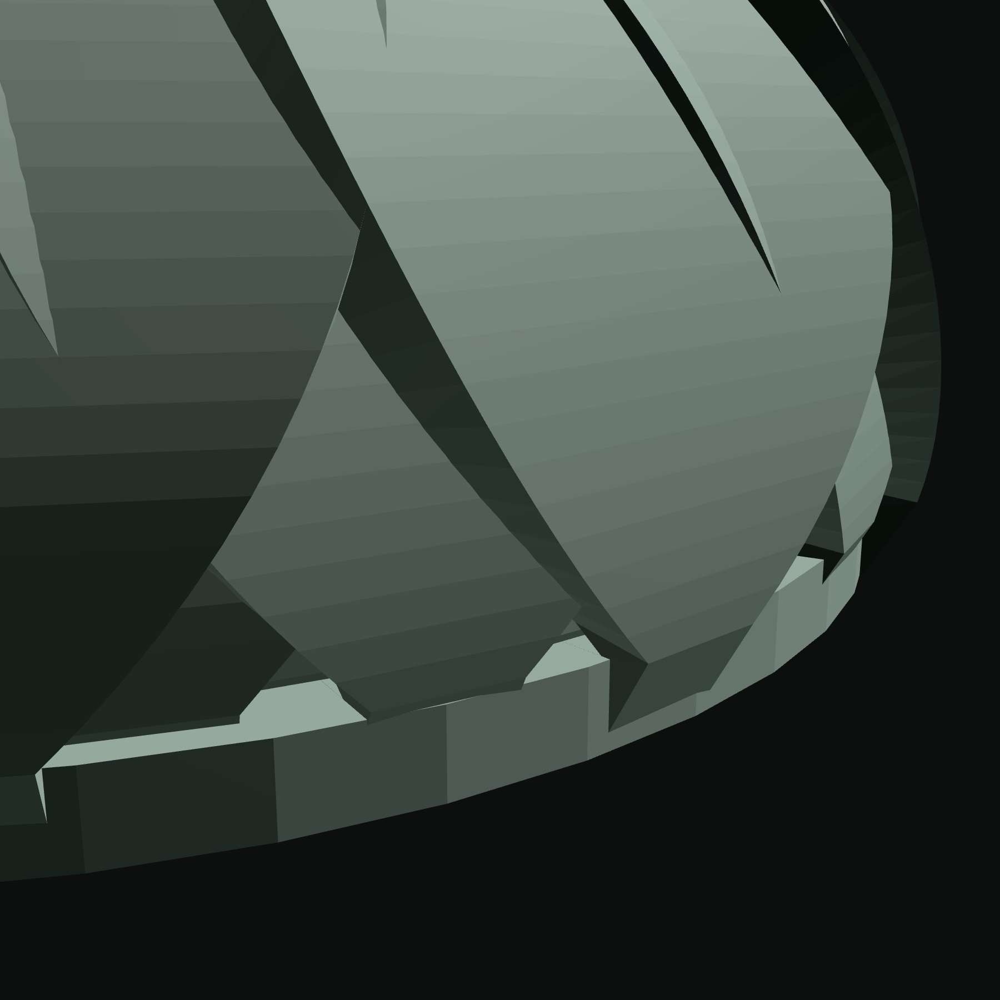

Both cells of a pair share ONE camera, sized from the branch and written verbatim to both trees. PRINT PREVIEW is ON in every cell, so this is the exported object rather than the screen geometry. Chrome hidden, autoRotate off, each frame settled until two consecutive screenshots are byte-identical. No pixel delta is quoted — two trees on two servers in two page sessions, and the question is what a person sees. The pair counts beside each row are the census's, not this tool's.
census 7,350 -> 9,944 pairs (REGRESSED) — RE-MEASURED on the merged tree against main at 1740a2e
DOME: the INCURVE TARGET x rise 0.5 (the sheet's headline; pre-registered D_max 5) · curl family pinned at identity, COVERAGE ASSERTED



census 7,806 -> 510 pairs (improved 15x) — RE-MEASURED on the merged tree against main at 1740a2e
DOME: the INCURVE TARGET, flat (40/turn x 3, spread 1.60, length 20, tilt 75, curl 150, ALL THIN feet) · curl family pinned at identity, COVERAGE ASSERTED


The domed row's effective seam turn is 125.4–128.1° on every one of its 120 rings — past a right angle, where the clearance law's own algebra reverses. The flat row's is 75.0–89.9°, under it on every ring. That is the only difference between them.